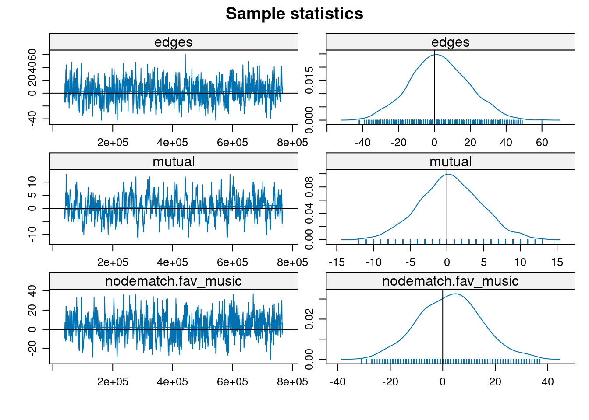
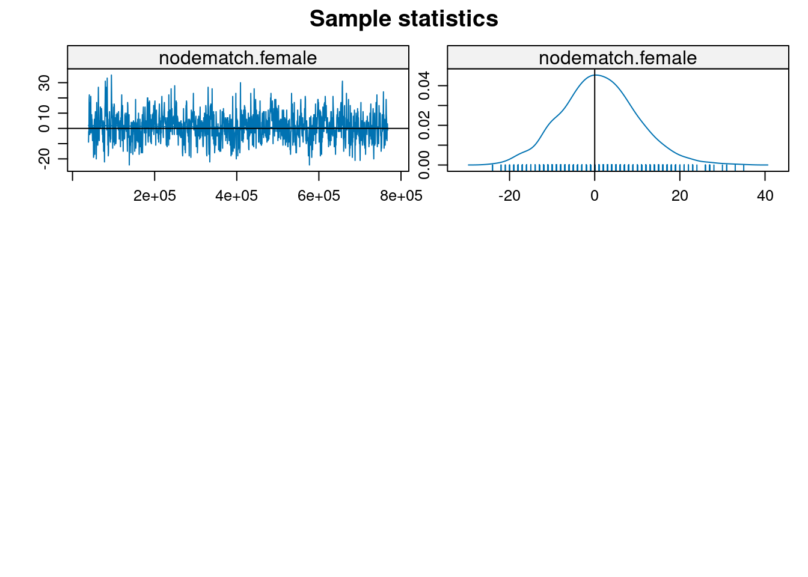

Let’s continue what we left off in the previous session: Evaluating our ERGMs. Like most models, ERGMs are a mix between art and science. Here is again a list of steps/considerations to have when fitting ERGMs:
Inspect the data.
Start with endogenous effects first.
After structure is controlled.
Evaluate your results: Once you have a model you are happy with, the last couple of steps are (a) assess convergence (which is usually done automagically by the ergm package,) and (b) assess goodness-of-fit, which in this context means how good was our model to capture (not-controlled for) properties of the network.
We are in the last step. Let’s recall what was our final model with the simulated data (code folded intentionally):
Code
## Loading the packageslibrary(ergm)library(sna)## Simulating the covariates (vertex attribute)set.seed(1235)## Simulating the dataY <-network(100, directed =TRUE)Y %v%"fav_music"<-sample(c("rock", "jazz", "pop"), 100, replace =TRUE)Y %v%"female"<-rbinom(100, 1, 0.5) ## Simulating the ERGMY <- ergm::simulate_formula( Y ~ edges +nodematch("fav_music") +nodematch("female") + mutual,coef =c(-4, 1, -1, 2) )
Call:
ergm(formula = Y ~ edges + mutual + nodematch("fav_music") +
nodematch("female"))
Monte Carlo Maximum Likelihood Results:
Estimate Std. Error MCMC % z value Pr(>|z|)
edges -3.9573 0.1112 0 -35.588 <1e-04 ***
mutual 1.8950 0.2853 0 6.643 <1e-04 ***
nodematch.fav_music 0.8295 0.1291 0 6.426 <1e-04 ***
nodematch.female -0.7436 0.1379 0 -5.394 <1e-04 ***
---
Signif. codes: 0 '***' 0.001 '**' 0.01 '*' 0.05 '.' 0.1 ' ' 1
Null Deviance: 13724 on 9900 degrees of freedom
Residual Deviance: 1994 on 9896 degrees of freedom
AIC: 2002 BIC: 2031 (Smaller is better. MC Std. Err. = 0.8189)
7.1 Convergence
As our model was fitted using MCMC, we must ensure the chains converged. We can use the mcmc.diagnostics function from the ergm package to check model convergence. This function looks at the last set of simulations of the MCMC model and generates various diagnostics for the user.
Under the hood, the fitting algorithm generates a stream of networks based on those parameters for each new proposed set of model parameters. The last stream of networks is thus simulated using the final state of the model. The mcmc.diagnostics function takes that stream of networks and plots the sequence of the sufficient statistics included in the model. A converged model should show a stationary statistics sequence, moving around a fixed value without (a) becoming stuck at any point and (b) chaining the tendency. This model shows both:
mcmc.diagnostics(model_final, which =c("plots"))


Note: MCMC diagnostics shown here are from the last round of
simulation, prior to computation of final parameter estimates.
Because the final estimates are refinements of those used for this
simulation run, these diagnostics may understate model performance.
To directly assess the performance of the final model on in-model
statistics, please use the GOF command: gof(ergmFitObject,
GOF=~model).
Now that we know our model was good enough to represent the observed statistics (sample them, actually,) let’s see how good it is at capturing other features of the network that were not included in the model.
7.2 Goodness-of-fit
This would be the last step in the sequence of steps to fit an ERGM. As we mentioned before, the idea of Goodness-of-fit [GOF] in ERG models is to see how well our model captures other properties of the graph that were not included in the model. By default, the gof function from the ergm package computes GOF for:
The model statistics.
The outdegree distribution.
The indegree distribution.
The distribution of edge-wise shared partners.
The distribution of the geodesic distances (shortest path).
The process of evaluating GOF is relatively straightforward. Using samples from the posterior distribution, we check whether the observed statistics from above are covered (fall within the CI) of our model. If they do, we say that the model has a good fit. Otherwise, if we observe significant anomalies, we return to the bench and try to improve our model.
As with all simulated data, our gof() call shows that our selected model was an excellent choice for the observed graph: